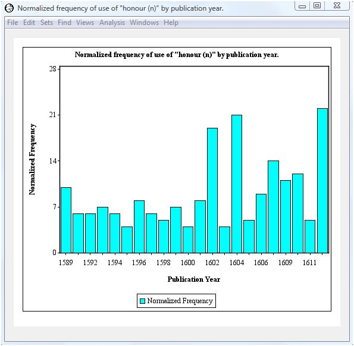

|
|
|
It is often instructive to follow the changes in an author's word form selection over time. WordHoard allows you to investigate such changes by selecting "Track Word Form Over Time" from the Analysis menu. WordHoard displays a dialog which allows you to select a specific word form and display the frequency of its use for each year in which an author has published at least one work. As an example, we will look for changes in how often Shakespeare used the lemma "honour (n)" in all his works.
The dialog fields are as follows.
Word is the word text whose counts we want to track over time.
Word Form specifies the type of word form which "Word" is. You may select any word form type, but Spelling, Lemma, and Word Class are the most common choices and generally make the most sense.
Analysis Text provides the set of works in which the word of interest occurs. The dates for each work provide the time line for tracking word frequencies over time. The analysis text must be a Corpus or Work Set, and should contain more than one work with an associated publication date. The Early Greek Epic corpus does not have publication dates for the works, so you cannot sensibly track word use over time in this corpus.
Frequency Normalization specifies how the raw word counts (frequencies) should be normalized for presentation.
No normalization leaves the raw counts unaltered. This may be useful if you intend to export the results to another program for further analysis.
Normalize to counts per ten thousand words reports the counts as if each work were exactly ten thousand words long. This is a traditional count normalization method in the humanities. This allows the counts in works of different length to be compared in a meaningful fashion.
Normalize to average word count in reference works reports the counts as if each work had the same number of words, computed as the simple arithmetic average (mean) of all the works in the reference text. This may be useful if the reference text is a complete corpus and the analysis text is contained in that corpus.
Normalize to parts per million reports counts as if each work were one million words long. This produces values which can be more meaningfully rounded to integer values.
Round Normalized Frequencies, when checked, requests that the normalized word frequencies for each year be rounded to the nearest whole number. Select this option if you prefer not to see decimal places in the normalized counts.
Pressing then "OK" button with our sample settings yields the following results.
The yearly output appears in six columns.
Year is the year in which one or more works were published. The exact publication year for some works may not be known -- only a range of years. For example, "A Lover's Comaplaint" was published sometime between 1599 and 1609. WordHoard uses the earliest possible publication year when computing the word frequencies. For "A Lover's Complaint", WordHoard chooses 1599 as the publication year.
Works is the number of works published in the year. In our example, 6 works were published in 1592.
Selected count is the number of times the selected word text appears in all works in this year. For our example, "honour (n)" appears 65 times in the 6 works in 1592.
Total count is the total number of words in all works in this year. The 6 works in 1592 contain a total of 110,319 lemma occurrences.
Mean count is the average number of times the selected word text appears in this year. It is computed as the selected count divided by the works count. In our example, there were six works by Shakespeare published in 1592. The lemma "honour (n)" appears 65 times in those six works. The average number of times the word appears in a work is therefore 65 / 6 = 10.8 rounded to one decimal place. This is the mean count value displayed in the table.
Normalized count is the mean count normalized using the specified frequency normalization method. We selected normalizing the counts in terms of occurrences per 10,000 words. To compute this, form the ratio ( nc / 10,000 ) = ( 65 / 110,319 ) and solve for "nc" to get 5.9 to two decimal places. This rounds up to 6 since we requested the normalized frequencies be rounded.
The normalized counts are generally higher for later years, demonstrating Shakespeare's increased use of "honour (n)" in his later works. To make this clearer, we can chart the normalized counts by pressing the "chart" button below the results table.

This vertical bar chart offers a clear visual indication that Shakespeare's use of "honour (n)" remained relatively constant from 1589 to 1601, but increased after that time. Peak usage occurred in 1602, 1604, and 1612. An appropriate followup analysis would involve close examination of the works published in those years. You can find the publication dates at the main table of contents window. Select the "Shakespeare" tab and then the "Date" option button.
You may save the chart image to a file by selecting "Save As..." from the "File" menu. You have a choice of jpeg, png, or svg format.
|
|
|